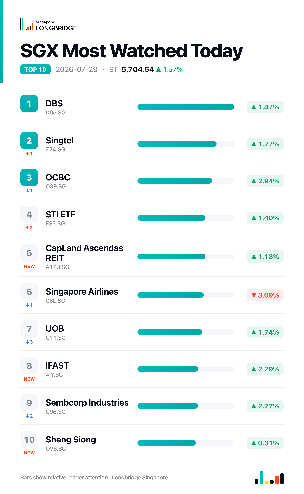

STI Surges 1.57% to 5,704.54 as Broad Rally Overwhelms Seatrium's Reversal
The Straits Times Index closed at 5,704.54 on Wednesday, up 88.43 points, or 1.57%, after ranging between 5,611.59 and 5,706.61 during the session. The advance was broad-based: 23 of the index's 30 constituents finished higher against five decliners and two unchanged, the widest breadth of the week, with property-linked conglomerates leading and all three local banks advancing together.
Wednesday's gains were spread across sectors rather than concentrated in a handful of heavyweights. Jardine Matheson and Hongkong Land topped the gainers' list, DBS, OCBC and UOB rose in lockstep, and Keppel and Sembcorp Industries advanced on company-specific disclosures. The broad tone also came as investors positioned ahead of the US Federal Reserve's rate decision due later this week, a backdrop that has kept regional markets attentive to rate-sensitive sectors such as banks and property trusts. The session's one conspicuous outlier was Seatrium, which fell sharply even as most of the market advanced.
Session Movers
Jardine Matheson (J36.SG, +6.05%) was Wednesday's best performer among the session's movers, extending a run built on a steady buyback programme: the group cancelled 25,000 shares on 20 July at a weighted average US$62.75 and a further 12,000 shares on 22 July at US$65.12, shrinking its outstanding share count with each round. The stock also rode a broader property-sector tailwind — JPMorgan noted on 17 July that real-estate names have entered a profit upcycle — a read that lifted fellow conglomerate Hongkong Land 5.07% in the same session. Consensus rating is Strong Buy, with a target implying about 27% upside.
Seatrium (5E2.SG, -8.47%) was the session's steepest decliner, giving back much of the gain built up since the group flagged a sharply higher expected first-half net profit on 24 July, which had driven the stock as much as 5.63% higher on Monday. Wednesday's news flow was actually positive — Bureau Veritas granted approval in principle for Seatrium's 30MW floating data-centre concept, a modular Data-in-a-Box SeaDC design using six 5MW units and natural seawater cooling that the company says can scale beyond 100MW — but it did not stop the reversal ahead of formal first-half results due before market open on Friday, 31 July.
OCBC (O39.SG, +2.94%) advanced alongside DBS and UOB, which rose 1.47% and 1.74% respectively, as all three banks moved together for the first time since Monday. OCBC said it has launched HELIOS, an agentic AI platform that halves wealth-client onboarding time to 15 business days against an industry median of six weeks; Bank of Singapore relationship managers are already using it in Singapore, Hong Kong and Dubai, with full rollout targeted for the third quarter. The stock trades at 2.08 times book, cheaper than only about 0.2% of its five-year range.
Sembcorp Industries (U96.SG, +2.77%) rose after its utilities arm agreed to acquire a 20% stake in Aster Power, a YTL Corporation subsidiary, becoming its exclusive gas supplier and deepening an energy partnership with Aster Chemicals and Energy that underpins power, steam and renewable-energy supply to refining and chemical operations on Jurong Island and Pulau Bukom.

One point worth noting
Wednesday's breadth confirmed the index move rather than diverging from it, a change from the pattern of the past two sessions. Advancers widened from 18 on Monday to 19 on Tuesday to 23 on Wednesday, but on the first two of those days the three banks' moves capped or offset the broader advance, holding the index roughly flat even as breadth improved. On Wednesday the banks joined the rally instead of resisting it, and the index moved in step with breadth for the first time this week — a reminder that the gap between a broad advance and a flat index, as seen on Tuesday, closes as soon as the heaviest-weighted names stop swimming against the tide.
This recap is for informational purposes only and does not constitute investment advice.